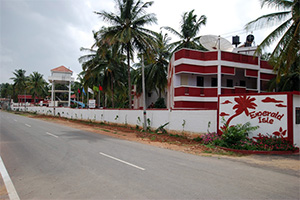

BBCh20 Nandi Hill ITT


Registraion Link: https://in.explara.com/e/bbch20-dec-nandiitt
When : Saturday, 19th December 20
Where : Nandi Hill Base
Google Start Point : https://goo.gl/maps/pAteYyaM2VrsCc1U8
Reporting Time : 7:45:00AM (45 mins before your start time)
Race Start : 8:30AM (As per your allocated time)
Distance : 7.34 kms Only
Elevation Gain : 402 meters
Race Cut Off Time : 90 Minutes (From your start time) for U18, Non-road bike and Women
Race Fee : Online -INR 699/- (NO Spot Registration)
Register To Race
| Volunteer Signup
FB Event :
https://www.facebook.com/events/3263043343823325/
Note: Registration will be closed by Tuesday, 15th December (midnight)
Bangalore Bicycle Championships is going with a Nandi Individual Time Trial at Nandi Hill.
The Route :
https://strava.app.link/SpfUtVCvHbb
Distance: 7.34km
Elevation gain: 402m
Hair Pins/Curvs: 40
The first 4km elevation gain 200m
The next 3.3km elevation gain 200m
Toughest/steepest between 30-33 curves
Tip: Take a slightly wider line on the steep curves ensuring no oncoming traffic is there. Get out of saddle to accelerate at the curves and settle back into rhythm.
Training: Climb more!
| Race Details: | |
| Race Venue / Parking / Registration Desk : Nandi Base | |
|  | |
| Start Point : Nandi Base | |
| What is a ITT? | |
|
An Individual Time Trial (ITT) is a road bicycle race in which cyclists race alone
against the clock on flat or rolling terrain, or up a mountain road – literally
"against the watch". ITTs are also referred to as "the race of truth", as winning
depends only on each rider's strength and endurance, and not on help provided by
team-mates and others riding ahead and creating a slipstream. Starting times are at equal intervals, usually one or two minutes apart. The starting sequence is usually based on the finishing times in preceding races (or preceding stages in the case of a multi-stage race) with the highest ranked cyclist starting last. Starting later gives the racer the advantage of knowing what time they need to beat (and also makes the event more interesting to pectators). Competitors are not permitted to draft (ride in the slipstream) behind each other. Any help between riders is forbidden. The rider with the fastest time is declared the winner. |
|
| Race Notes : | |
|
FAQ 1. What is this start list for ? - Rider will start as per the start list. 2. I see two times? start time (race clock) & start time (real time), what are they ? - race clock will be started when first rider starts, real time is for your reference at what time you will start(real time is in IST) 3. When should i collect my bib ? - you can plan your arrival as according to your start time. Make sure you are lined up 5 mins before your start time. 4.What is the time interval? - 30 Secs (It may vary on participants number) 5. How is the start order designed - Start order is designed based on last years results, winner will go in last. 6. What will happen if a person miss his start time ? - He will loose his time or he has to start at last. 7. What is the use of having a start list ? * It is the standard format of ITT to publish start order before race. * Participants can plan their start ( warm-up and nutrition) * This will help participants and teams to plan arrival before their start time. 9. Where should i put my bib ? - MUST be on front handle bar of your bicycle |
|
|
Standard Operating Procedure for BBCh Race, December 19th, 20 |
|
|
|
© 2009-2020 Bangalore Bicycle Championships. All Right Reserved.